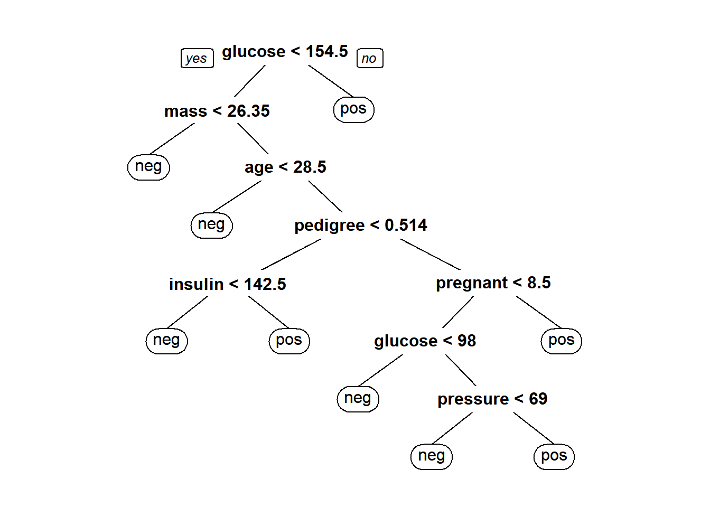

Machine Learning Classification
1 Steps of Analysis
To perform predictive analytics using a machine learning approach, a researcher can follow a systematic process to ensure accurate and reliable results.

1.1 Explore and Understand the Data
The first step is to explore and understand the dataset. This involves collecting the data and performing initial analyses to gain insights into its structure and characteristics.
The researcher should examine summary statistics to understand the central tendencies and variability of the data. Visualizations such as histograms, scatter plots, and box plots can help identify patterns, trends, and potential outliers.
Identifying the independent variables (features) and the dependent variable (target) that needs to be predicted is essential for the subsequent steps in the analysis.
1.2 Prepare the Data for Modelling
The next step is to prepare it for modeling. Data preparation involves cleaning the data by handling missing values through imputation or removal, removing duplicates, and correcting inconsistencies.
The dataset is then split into training and testing sets, typically with an 80/20 split, to allow for model training and evaluation on separate data.
1.3 Model Building
With the data prepared, the researcher can proceed to model building using various machine learning algorithms. Three common models for classification tasks are decision trees, k-nearest neighbors (k-NN), and artificial neural networks (ANN).
1.3.1 Decision Tree
A decision tree is a flowchart-like structure where internal nodes represent feature tests, branches represent the outcomes of these tests, and leaf nodes represent class labels. The model is trained by selecting the best features that partition the data to maximize information gain, resulting in a tree structure that can be used to make predictions on new data.
1.3.2 k-Nearest Neighbors (k-NN)
The k-NN algorithm classifies a data point based on the majority class of its k nearest neighbors in the feature space. Distance metrics, such as Euclidean distance, are used to find the closest neighbors.
1.3.3 Artificial Neural Network (ANN)
An ANN is inspired by the biological neural networks in the human brain. It consists of interconnected layers of neurons, including input, hidden, and output layers. Each connection has a weight that is adjusted during training. The ANN learns complex patterns by adjusting these weights through a process called backpropagation. The activation functions in the neurons determine whether they should be activated, influencing the final output of the network.
1.4 Model Evaluation
The final step is to evaluate the performance of the trained models using the test data. This involves using metrics such as accuracy, precision, recall, and F1 score, which are derived from the confusion matrix.
The confusion matrix provides a detailed breakdown of the true positive, false positive, true negative, and false negative predictions. Additionally, cross-validation techniques, such as k-fold cross-validation, can be used to ensure the robustness and generalizability of the model.
By splitting the data into different training and testing sets multiple times, the researcher can assess how well the model performs on various subsets of the data, leading to a more reliable evaluation of its predictive power.
2 Setting Up the Environment
3 Dataset
The Pima Indian Diabetes Dataset consists of medical diagnostic reports for 768 individuals from a population living near Arizona, USA. All participants in the dataset are female, at least 21 years old, and of Pima Indian heritage. The dataset is used to predict whether or not a patient has diabetes based on various diagnostic measurements.
'data.frame': 768 obs. of 9 variables:
$ pregnant: num 6 1 8 1 0 5 3 10 2 8 ...
$ glucose : num 148 85 183 89 137 116 78 115 197 125 ...
$ pressure: num 72 66 64 66 40 74 50 0 70 96 ...
$ triceps : num 35 29 0 23 35 0 32 0 45 0 ...
$ insulin : num 0 0 0 94 168 0 88 0 543 0 ...
$ mass : num 33.6 26.6 23.3 28.1 43.1 25.6 31 35.3 30.5 0 ...
$ pedigree: num 0.627 0.351 0.672 0.167 2.288 ...
$ age : num 50 31 32 21 33 30 26 29 53 54 ...
$ diabetes: Factor w/ 2 levels "neg","pos": 2 1 2 1 2 1 2 1 2 2 ...summary(PimaIndiansDiabetes) pregnant glucose pressure triceps
Min. : 0.000 Min. : 0.0 Min. : 0.00 Min. : 0.00
1st Qu.: 1.000 1st Qu.: 99.0 1st Qu.: 62.00 1st Qu.: 0.00
Median : 3.000 Median :117.0 Median : 72.00 Median :23.00
Mean : 3.845 Mean :120.9 Mean : 69.11 Mean :20.54
3rd Qu.: 6.000 3rd Qu.:140.2 3rd Qu.: 80.00 3rd Qu.:32.00
Max. :17.000 Max. :199.0 Max. :122.00 Max. :99.00
insulin mass pedigree age diabetes
Min. : 0.0 Min. : 0.00 Min. :0.0780 Min. :21.00 neg:500
1st Qu.: 0.0 1st Qu.:27.30 1st Qu.:0.2437 1st Qu.:24.00 pos:268
Median : 30.5 Median :32.00 Median :0.3725 Median :29.00
Mean : 79.8 Mean :31.99 Mean :0.4719 Mean :33.24
3rd Qu.:127.2 3rd Qu.:36.60 3rd Qu.:0.6262 3rd Qu.:41.00
Max. :846.0 Max. :67.10 Max. :2.4200 Max. :81.00 3.1 Data Preparation
pima <- PimaIndiansDiabetes
pima1 <- pima[pima["glucose"] != 0 & pima["pressure"] != 0 &
pima["triceps"] != 0 & pima["mass"] != 0, ]Data now left with 532 samples. Split into 80% of training and another 20% for testing.
3.2 Divide Data into Training and Test Dataset
4 Decision Tree
4.1 Model Building
DTmodel <- rpart(diabetes ~ ., data = trainData, method = "class", parms = list(split = "information"))
prp(DTmodel, roundint = FALSE, digits = 0)
Interpretation:
The decision tree for predicting diabetes primarily splits the data based on glucose levels, with glucose < 154.5 being the root node.
If glucose is below this threshold, further splits involve mass, age, pedigree, insulin, pregnant, and pressure to refine predictions.
For instance, low mass or younger age tends to predict negative for diabetes, whereas high glucose levels predict positive.
Other variables like pedigree and insulin levels further refine these predictions.
This tree highlights glucose as the most influential variable, with other factors progressively contributing to the accuracy of diabetes classification.
4.2 Model Evaluation
DTpred <- predict(DTmodel, testData, type = "class")
confusionMatrix(DTpred, testData$diabetes, positive = "pos")Confusion Matrix and Statistics
Reference
Prediction neg pos
neg 62 14
pos 7 24
Accuracy : 0.8037
95% CI : (0.7158, 0.8742)
No Information Rate : 0.6449
P-Value [Acc > NIR] : 0.0002546
Kappa : 0.553
Mcnemar's Test P-Value : 0.1904303
Sensitivity : 0.6316
Specificity : 0.8986
Pos Pred Value : 0.7742
Neg Pred Value : 0.8158
Prevalence : 0.3551
Detection Rate : 0.2243
Detection Prevalence : 0.2897
Balanced Accuracy : 0.7651
'Positive' Class : pos
Interpretation:
Accuracy of 80.37% indicates that 80.37% of the predictions made by the model are correct.
Recall (Sensitivity) of 63.16% means that the model correctly identified 63.16% of the actual positive cases.
Specificity of 89.86% indicates that the model correctly identified 89.86% of the actual negative cases.
Precision (Positive Predictive Value) of 77.42% means that 77.42% of the instances predicted as positive by the model were indeed positive.
5 K-Nearest Neighboor
5.1 Data Normalization
5.2 Model Building
pima2[1:8] <- as.data.frame(lapply(pima2[1:8], normalize))
trainDataN <- pima2[1:sRow, ]
testDataN <- pima2[(sRow + 1):nrow(pima2), ]
KNNpred <- knn(
train = trainDataN[, 1:8], test = testDataN[, 1:8],
cl = trainDataN[, 9], k = 7
)5.3 Model Evaluation
confusionMatrix(KNNpred, testDataN$diabetes, positive = "pos")Confusion Matrix and Statistics
Reference
Prediction neg pos
neg 63 18
pos 6 20
Accuracy : 0.7757
95% CI : (0.6849, 0.8507)
No Information Rate : 0.6449
P-Value [Acc > NIR] : 0.002462
Kappa : 0.4729
Mcnemar's Test P-Value : 0.024745
Sensitivity : 0.5263
Specificity : 0.9130
Pos Pred Value : 0.7692
Neg Pred Value : 0.7778
Prevalence : 0.3551
Detection Rate : 0.1869
Detection Prevalence : 0.2430
Balanced Accuracy : 0.7197
'Positive' Class : pos
Interpretation:
Accuracy of 77.57% indicates that 77.57% of the predictions made by the model are correct.
Recall (Sensitivity) of 52.63% means that the model correctly identified 52.63% of the actual positive cases.
Specificity of 91.30% indicates that the model correctly identified 91.30% of the actual negative cases.
Precision (Positive Predictive Value) of 76.92% means that 76.92% of the instances predicted as positive by the model were indeed positive.
6 Artificial Neural Network
6.1 Model Building with 1 Layer
Interpretation:
The artificial neural network (ANN) model visualized in the provided plot is trained to predict diabetes based on several input features: pregnant, glucose, pressure, triceps, insulin, mass, pedigree, and age.
The model consists of a single hidden layer with one neuron, indicating a relatively simple network structure. The connections between the input features and the hidden neuron show the weights (both positive and negative), reflecting the contribution of each feature to the model’s decision-making process.
The model outputs two possible predictions: pos (positive for diabetes) and neg (negative for diabetes).
The weights and biases associated with each input highlight the influence of each variable on the prediction, with glucose and mass appearing to have significant weights.
The error value and the number of steps indicate the model’s training performance and the iterations it underwent to minimize the error.
6.2 Model Prediction
6.3 Model Evaluation
confusionMatrix(factor(NNpred), testDataN$diabetes, positive = "pos")Confusion Matrix and Statistics
Reference
Prediction neg pos
neg 62 13
pos 7 25
Accuracy : 0.8131
95% CI : (0.7262, 0.8819)
No Information Rate : 0.6449
P-Value [Acc > NIR] : 0.0001072
Kappa : 0.5769
Mcnemar's Test P-Value : 0.2635525
Sensitivity : 0.6579
Specificity : 0.8986
Pos Pred Value : 0.7812
Neg Pred Value : 0.8267
Prevalence : 0.3551
Detection Rate : 0.2336
Detection Prevalence : 0.2991
Balanced Accuracy : 0.7782
'Positive' Class : pos
Interpretation:
Accuracy of 81.31% indicates that 81.31% of the predictions made by the model are correct.
Recall (Sensitivity) of 65.79% means that the model correctly identified 65.79% of the actual positive cases.
Specificity of 89.86% indicates that the model correctly identified 89.86% of the actual negative cases.
Precision (Positive Predictive Value) of 78.12% means that 78.12% of the instances predicted as positive by the model were indeed positive.
7 Model Comparison
| Metric | Decision Tree | K-Nearest Neighbor | Artificial Neural Network |
|---|---|---|---|
| Accuracy | 0.8037 | 0.7757 | 0.8131 |
| Recall (Sensitivity) | 0.6316 | 0.5263 | 0.6579 |
| Specificity | 0.8986 | 0.9130 | 0.8986 |
| Pecision (PPV) | 0.7742 | 0.7692 | 0.7812 |
Interpretation:
Based on the comparison of three machine learning models—Decision Tree, K-Nearest Neighbor (k-NN), and Artificial Neural Network (ANN)—the ANN emerges as the best-performing model. It achieves the highest accuracy (81.31%), indicating its overall superior performance in correctly classifying instances. The ANN also has the highest sensitivity (65.79%) and positive predictive value (PPV) (78.12%), making it more effective in identifying true positive cases.
While the k-NN model has the highest specificity (91.30%), indicating it is best at correctly identifying negative cases, it falls short in accuracy and sensitivity.
The Decision Tree model performs well but is slightly less accurate and sensitive compared to the ANN. Therefore, the ANN is the most balanced and reliable model for predictive analytics in this dataset.
8 DT Cross Validation
k <- 10
DTaccuracy <- rep(NA, k)
folds <- split(pima1, cut(1:nrow(pima1), k))
for (i in 1:k) {
test <- ldply(folds[i], data.frame)
train <- ldply(folds[-i], data.frame)
test$.id <- NULL
train$.id <- NULL
DTmodel <- rpart(diabetes ~ ., data = train, method = "class", parms = list(split = "information"))
DTpred <- predict(DTmodel, test, type = "class")
DTaccuracy[i] <- confusionMatrix(DTpred, test$diabetes, positive = "pos")$overall["Accuracy"]
}DTaccuracy [1] 0.7407407 0.8301887 0.6981132 0.5849057 0.8301887 0.8113208 0.7735849
[8] 0.8679245 0.8113208 0.8148148mean(DTaccuracy)[1] 0.7763103